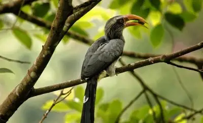
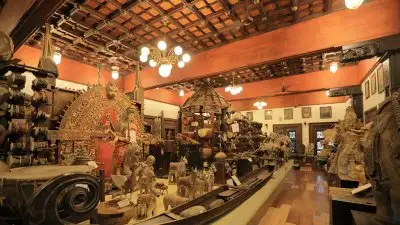

Ernakulam is one of the most developed districts of Kerala covering an area of 3068 sqkm and based in the heartland of the state. It is the commercial capital of the state yielding the highest revenue among all districts in Kerala. Having its headquarters based at Kakkanad, it has the biggest metropolitan region, Cochin in its geographical limitations. Formed on 1st April,1958, the district is one of the most visited place and records the highest number of tourist visit in the state. Filled with churches and temples, museums and scenic beauty, historical places to cosmopolitan areas, shopping zones to movie theaters, the district has it all attracting tourists and facilitating the inhabitants of the district in the best way.
Places To Visit In Ernakulam
Thattekkad Bird Sanctuary

One of the first bird sanctuaries in Kerala and undeniably a haven for nature enthusiasts. In the words of Salim Ali (world famous ornithologist), Thattekkad is the “richest bird sanctuary in India” since it is home to hundreds of different endangered species of migratory birds. This thick deciduous forest has plantations of mahogany, teak, rosewood and rubber running through it. Make sure to bring along a pair of binoculars to get a glimpse of the birdlife. The best time to visit would be between November and March.
Vypeen Island
Surrounded by three hills – Mankunnu, Kodayathoormala and Thonippara – Elaveezha Poonchira is a must-see tourist place in Kottayam. Known for its magnificent views and lush greenery, Elaveezha Poonchira is dotted with exquisite waterfalls and secret alcoves. It is famous among trekkers for its terrain and is the perfect picnic spot, hardly an hour away from the main Kottayam town.
Folklore Museum

Folklore Museum is one of the popular tourist spots in the city. It is a three storied complex that showcases cultural exhibits and tribal artefacts. The Museum design was greatly inspired by the Malabar architecture. The museum is opened to the public from 9: 30 Am to 7 PM on a regular basis. Location: Near, 2059C No 26 Pandit Karuppan Road, Thevara Ferry Road, Junction, Kochi, Kerala 682013